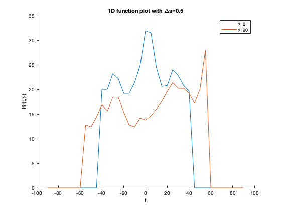
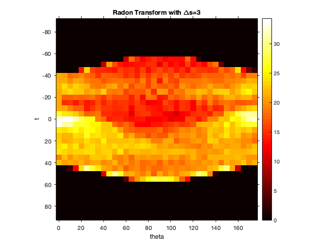

Contents
- Generating and Visualizing the Shepp-Logan phantom image
- Q1.a) Implementing myIntegration function
- Q1.b) Implementing myRadonTrans function
- Radon transform with delta_s = 0.5
- Radon transform with delta_s = 1
- Radon transform with delta_s = 3
- Q1.c) Comparing the plots and images
- Q1.d) Parameter settings for delta_t and delta_theta
- Q1.e) Parameter in CT reconstruction using ART
Generating and Visualizing the Shepp-Logan phantom image
im = phantom(128);
printImage(im,'Original phantom image - f(x,y)');
Q1.a) Implementing myIntegration function
function result = myIntegration(im,t,theta,delta_s) [m,n] = size(im); m = m/2.0; n = n/2.0; s = repmat(-90:delta_s:90,numel(t),1); x = m+t.*cosd(theta) + s.*sind(theta); y = n+s.*cosd(theta) - t.*sind(theta); f = interp2(im,x,y,'linear',0); result = sum(f,2)*delta_s; end
For discrete approximation of the integral, I think delta_s = 1 should be suitable choice. This is because for our application, the integral is going to be over discrete image. Though choosing delta_s < 1 adds up function values at a more finer scale, here those values themselves will be calculated using some kind of interpolation and thus will add more redundancy than actual information about the function itself (because interpolation makes some assumptions about the actual function). Also, a smaller delta_s is computationally more expensive. On the other hand, using a bigger value of delta_s gives bad approximation to the integral.
For interpolation, I've used bilinear interpolation because it's faster as compared to other interpolation methods. Also, we need interpolation for calculating the integral. Bilinear interpolation just adds up closest pixel values with some weights which in the end means a weighted sum over the actual pixel values in the image. Thus it doesn't add any false information to the integral due to any assumptions about the function. Other interpolation methods like cubic may add some false information to the integral when delta_s is very small.
Q1.b) Implementing myRadonTrans function
function [result,t,theta] = myRadonTrans(im,delta_t,delta_theta,delta_s) t = -90:delta_t:90; theta = 0:delta_theta:(180-delta_theta); [p,q] = meshgrid(theta,t); t_g = q(:); theta_g = p(:); result = myIntegration(im,t_g,theta_g,delta_s); result = reshape(result, numel(t), numel(theta)); end
Radon transform with delta_s = 0.5
tic; [R,t,theta] = myRadonTrans(im,5,5,0.5); toc; figure; iptsetpref('ImshowAxesVisible','on'); imshow(R,[],'Xdata',theta,'Ydata',t,'InitialMagnification','fit') title('Radon Transform with \Deltas=0.5'); xlabel('theta'); ylabel('t'); colormap(gca,hot), colorbar; figure; hold on; plot(t,R(:,1)); plot(t,R(:,90/5+1)); hold off; title('1D function plot with \Deltas=0.5'); xlabel('t'); ylabel('Rf(t,\theta)'); legend('\theta=0','\theta=90');
Elapsed time is 0.019308 seconds.
Radon transform with delta_s = 1
tic; [R,t,theta] = myRadonTrans(im,5,5,1); toc; figure; iptsetpref('ImshowAxesVisible','on'); imshow(R,[],'Xdata',theta,'Ydata',t,'InitialMagnification','fit'); title('Radon Transform with \Deltas=1'); xlabel('theta'); ylabel('t'); colormap(gca,hot), colorbar; figure; hold on; plot(t,R(:,1)); plot(t,R(:,90/5+1)); hold off; title('1D function plot with \Deltas=1'); xlabel('t'); ylabel('Rf(t,\theta)'); legend('\theta=0','\theta=90');
Elapsed time is 0.005965 seconds.
Radon transform with delta_s = 3
tic; [R,t,theta] = myRadonTrans(im,5,5,3); toc; figure; iptsetpref('ImshowAxesVisible','on'); imshow(R,[],'Xdata',theta,'Ydata',t,'InitialMagnification','fit'); title('Radon Transform with \Deltas=3'); xlabel('theta'); ylabel('t'); colormap(gca,hot), colorbar; figure; hold on; plot(t,R(:,1)); plot(t,R(:,90/5+1)); hold off; title('1D function plot with \Deltas=3'); xlabel('t'); ylabel('Rf(t,\theta)'); legend('\theta=0','\theta=90');
Elapsed time is 0.003168 seconds.
Q1.c) Comparing the plots and images
It can be observed that both the plot and image are roughest for delta_s = 3. This is because delta_s = 3 gives a relatively bad approximation for the integral along any line. Since here delta_s > 1, the integral doesn't even sum up all the information available in the original image thus resulting in jumps in the plot and more roughness in the radon transform image. The other two values of delta_s however give nearly the same results. This could be because after a certain point, decreasing delta_s doesn't add much useful information for calculating the integral. Though it adds up pixel values at a more finer scale, the values themselves are calculated using some interpolation using pixel values already available. This may add redundancy in the radon transform but may not add much information about the function. Also using a smaller value for delta_s is slower.
Q1.d) Parameter settings for delta_t and delta_theta
tic; [R,t,theta] = myRadonTrans(im,1,1,1); toc; figure; iptsetpref('ImshowAxesVisible','on'); imshow(R,[],'Xdata',theta,'Ydata',t,'InitialMagnification','fit'); title('Radon Transform with \Deltat=1 and \Delta\theta=1'); xlabel('theta'); ylabel('t'); colormap(gca,hot), colorbar; figure; hold on; plot(t,R(:,1)); plot(t,R(:,90/1+1)); hold off; title('1D function plot with \Deltat=1 and \Delta\theta=1'); xlabel('t'); ylabel('Rf(t,\theta)'); legend('\theta=0','\theta=90'); tic; [R,t,theta] = myRadonTrans(im,5,5,1); toc; figure; iptsetpref('ImshowAxesVisible','on'); imshow(R,[],'Xdata',theta,'Ydata',t,'InitialMagnification','fit'); title('Radon Transform with \Deltat=5 and \Delta\theta=5'); xlabel('theta'); ylabel('t'); colormap(gca,hot), colorbar; figure; hold on; plot(t,R(:,1)); plot(t,R(:,90/5+1)); hold off; title('1D function plot with \Deltat=5 and \Delta\theta=5'); xlabel('t'); ylabel('Rf(t,\theta)'); legend('\theta=0','\theta=90'); tic; [R,t,theta] = myRadonTrans(im,0.25,0.25,1); toc; figure; iptsetpref('ImshowAxesVisible','on'); imshow(R,[],'Xdata',theta,'Ydata',t,'InitialMagnification','fit'); title('Radon Transform with \Deltat=0.25 and \Delta\theta=0.25'); xlabel('theta'); ylabel('t'); colormap(gca,hot), colorbar; figure; hold on; plot(t,R(:,1)); plot(t,R(:,90/0.25+1)); hold off; title('1D function plot with \Deltat=0.25 and \Delta\theta=0.25'); xlabel('t'); ylabel('Rf(t,\theta)'); legend('\theta=0','\theta=90');
Elapsed time is 0.174559 seconds. Elapsed time is 0.010457 seconds. Elapsed time is 4.960984 seconds.
It can be observed from the above images that we get a more smoother image using a smaller value of delta_t and delta_theta. This is simply because a smaller delta_t and delta_theta gives radon transform with a finer grid or resolution i.e., decreasing delta_t and delta_theta by a factor of 4 gives us a 4 times larger image of radon transform. Similarly with a corser grid we get a transform of lower resolution. Also, using a finer grid also increases the compution time for radon transform as can be observed from the documented elapsed times. The 1D plots again show a trend similar to what we saw in Q1.c on changing delta_s. After a point, decreasing delta_t and delta_theta doesn't add much infromation to the radon transform because of the similar reasons as in Q1.c. Thus, since here we are inspecting radon transform of a discrete image, decreasing the parameters too much doesn't help much. However a finer grid will add more information to the radon transform of a continuous function and thus will be useful in real CT scanners.
Thus selection of delta_t and delta_theta depends on how much resolution is actually required for the application. The parameters should be set such that the resolution we get in the reconstructed images is just enough for the diagnosis because though using finer grid might be give resolution images, they may not be neccessary for the diagnosis. Unnecessarily decreasing these parameters will add more computation time which in real CT scanner also means a higher power consumption, higher exposure to radiation while scanning and a longer wait period for the reconstruction more delays in the diagnosis.
Q1.e) Parameter in CT reconstruction using ART
Size of image pixel grid should be chosen such that the resolution is just enough for the correct diagnosis. This is because though a bigger image pixel grid means higher resolution reconstructed image, it increases the need for more observations required for a reconstruction using ART. With lesser number of observations and larger image pixel grid, we may not have sufficient hyperplanes in ART to find a good enough solution. This increase in number of observations has the similar effects as that of decreasing delta_t and delta_theta (as discussed in Q1.d).